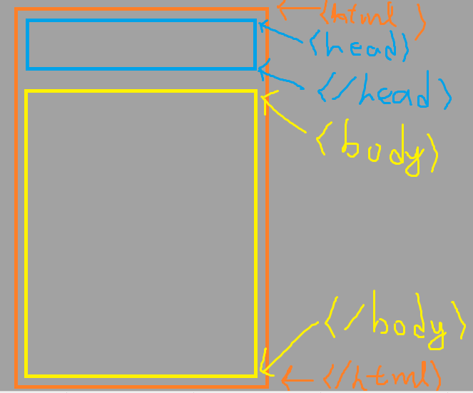
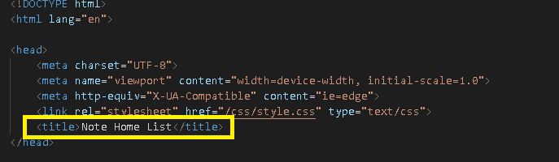
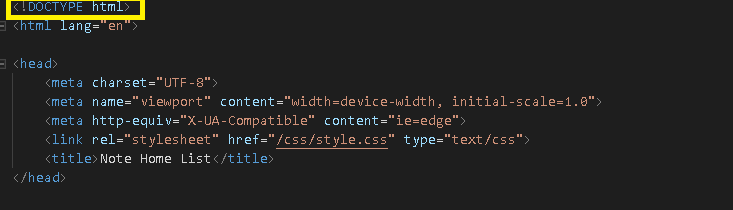
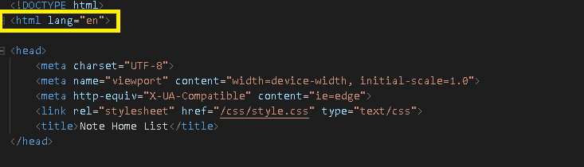
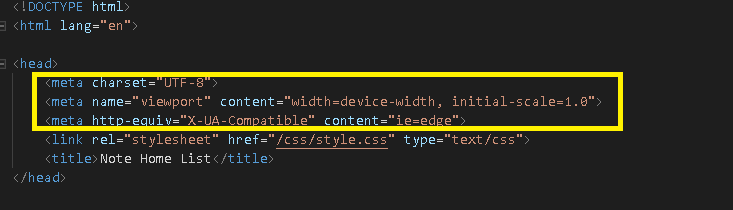

HTML
一份A4紙
我們想像成網頁是一份文件，一張A4紙，拿到這份文件，我們要告訴別人哪裡開始哪裡結束拉(整份文件)，而一份文件也會有開頭跟結尾跟內容處嘛!
這就是一個網頁的基本架構了，不過在實際上會有更多小細節的資料需要去注意與寫的，在這裡只是基礎觀念而已，在網頁當中要告訴它html的頁面開始與哪裡結束， 對於head與body可以最點簡單的分別，head通常是放"不是給人看得，"而body通常是放"給人看得"(在實際上當然不是這個樣子，只不過比較好記憶而已，不給人看得比如說script等等) 在head裡面有什麼是給人看得呢?!就像是在網頁標籤上的網頁名稱就是放在head裡面!
About DOCTYPE
你會看到一個這一行
那這行是幹什麼用的呢?! 這行其實不是html的標籤喔!它只是一個聲明而已，聲明、告訴別人(瀏覽器)要用什麼樣的標準來解讀這一份檔案 在這一行的意思就是"使用html的標準來解讀這份檔案"，像是html的tag或是css等等，Maybe你可能會說，嗯?我剛剛DEMO的時候不用打這行聲明，網頁也是跑得出來啦!!那為什麼要這行聲明 事實是網頁上的進展會有不同的標準存在，像是以前的html4、XHTML直到現在的HTML5，會有不同的標準，今天假設一個情況，有這麼多的標準可以去解讀一份文件，那今天我給你了一份文件 ，卻不告訴你用哪種標準來解讀，而當你使用的解讀方式跟我撰寫的方式不一樣的時候，就會出問題拉!!所以這行聲明是挺重要的，可以確保他人可以用我們希望(正確)的方式去解讀一份文件
而在DOCTYPE下面那行html lang="en"的意思是這個頁面主要語言(English)，雖然是設定"en"中文也可以正常顯示，但...google大哥....看不到吧! 所以這是會影像google thanslate的，google對於網頁的分析也會比較清楚。 ※zh-tw(old) zh-hant-tw是for繁體中文的
而"meta"我們稱為中繼資料，這...就google吧!有太多資料可以塞了!